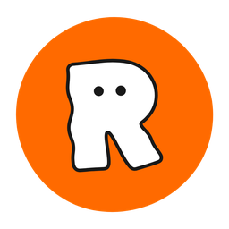

우리는 어떻게
움직였을까요?
노션에 쌓인 회의록과 기획안을 근거로 답합니다. 질문하면 출처 문서가 함께 나옵니다.
찾고 싶은 단어를 정확히 안다면 ‘문서 검색’이 더 빠릅니다.
답은 노션 기록에서만 만들어지며 틀릴 수 있습니다. 개인정보가 있는 문서는 질문 대상에서 제외됩니다. Enter 전송, Shift+Enter 줄바꿈.

REMO 기록실내부용노션에 쌓인 회의록과 기획안을 근거로 답합니다. 질문하면 출처 문서가 함께 나옵니다.
찾고 싶은 단어를 정확히 안다면 ‘문서 검색’이 더 빠릅니다.
답은 노션 기록에서만 만들어지며 틀릴 수 있습니다. 개인정보가 있는 문서는 질문 대상에서 제외됩니다. Enter 전송, Shift+Enter 줄바꿈.